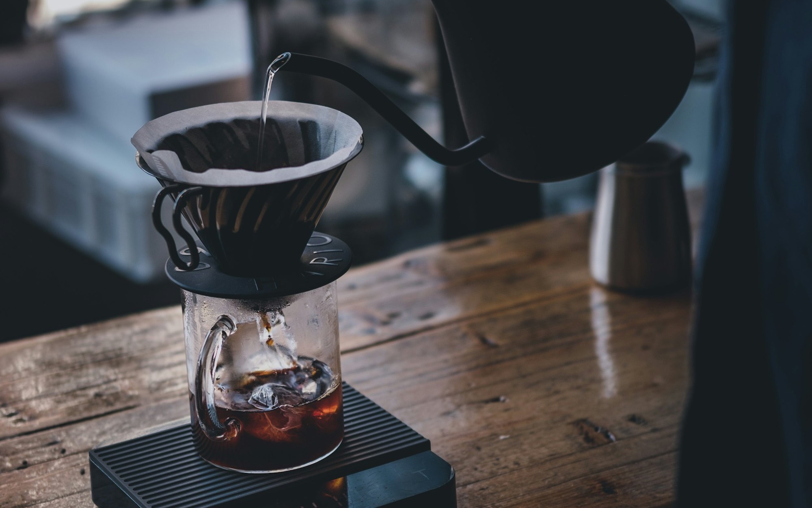
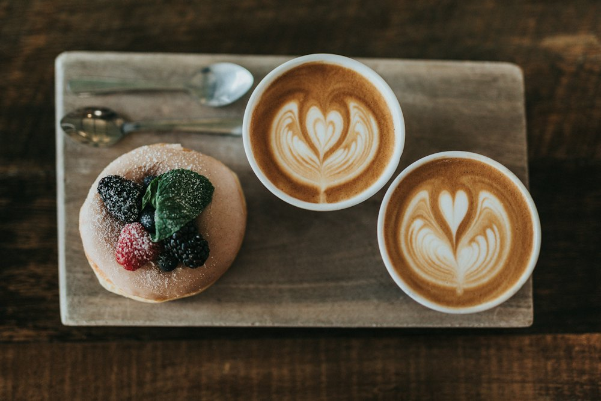
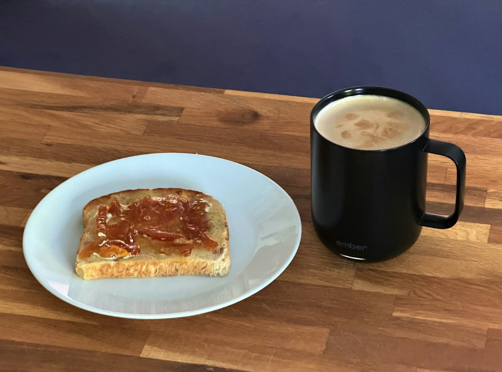
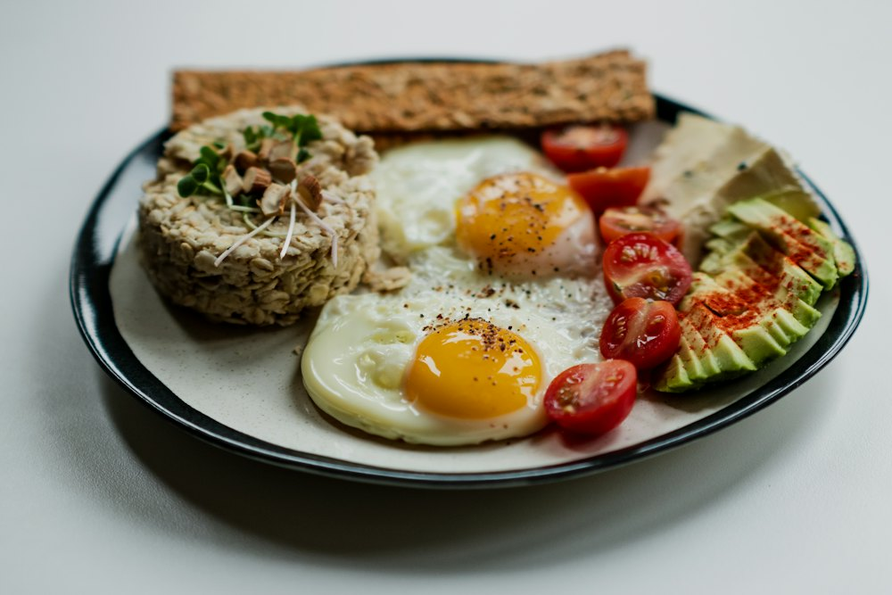
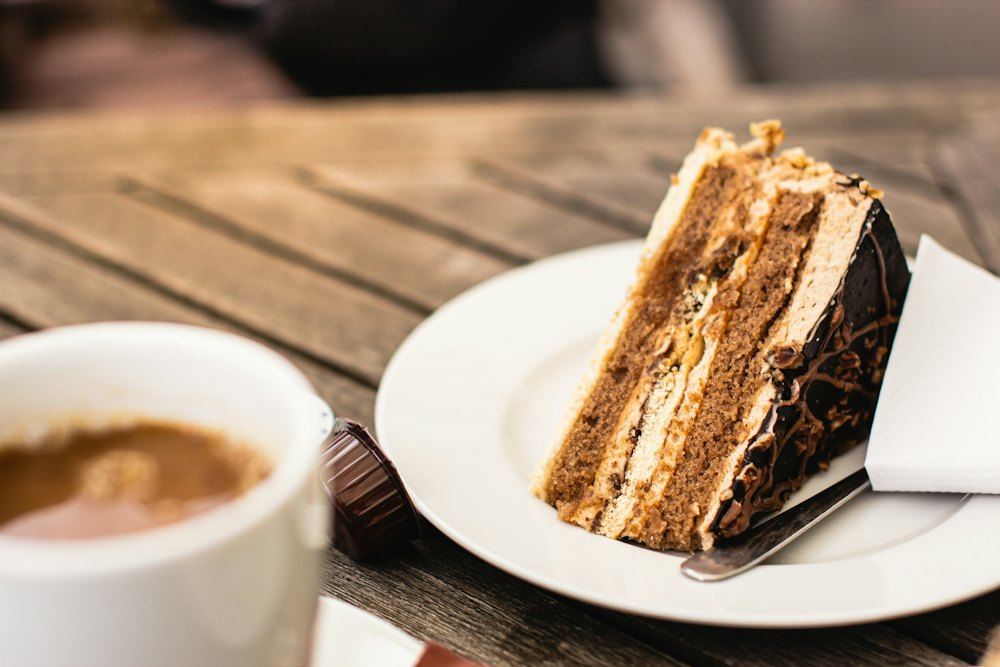

Menu
メニュー
珈琲
ご注文を受けてから豆を挽き、一杯ずつハンドドリップで淹れます。
ひのき
ブレンド 550円（深煎り） 苦みとコクのある、いちばん人気の一杯。
本日の
シングル 600円オリジン （浅煎り） 果実のような香り。豆は月ごとに変わります。
カフェインレス550円
カフェオレ／
ラテ 600円アイス
コーヒー 550円

お茶・そのほか
奈良県でつくられたお茶を中心にご用意しています。
大和
ほうじ茶 500円奈良の
和紅茶 550円季節の
ジュース 600円ミルク
（お子さま向け） 300円
モーニング
8:00〜11:00。ドリンクと一緒にご注文ください。
トースト
セット ドリンク代＋150円厚切りトースト（自家製ジャム・バター）、ゆで卵。
あんバター
トースト ドリンク代＋300円モーニング
プレート 950円トースト、サラダ、目玉焼き、ドリンクつき。

ランチ
11:30〜14:00。なくなり次第終了です。ご予約はお電話で承ります。
ひのき
プレート 1,300円奈良の野菜を中心にした日替わりのプレート。スープ・ドリンクつき。
季節の
サンドイッチ 1,100円セット スープ・ドリンクつき。

甘いもの
毎朝お店で焼いています。ドリンクとセットで50円引きになります。
パウンド
ケーキ 500円プレーン・レモン・ほうじ茶の3種類から。
栗と
ほうじ茶の 550円パウンド ケーキ （秋限定） かための
プリン看板メニュー 450円毎朝焼く、いちばん人気のプリン。1日20個まで。

- 価格はすべて税込です。
- アレルギーのある方は、ご注文の前にお知らせください。
- 焼き菓子と珈琲豆は、お持ち帰りもできます。
- メニューは季節によって変わることがあります。